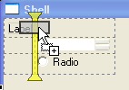
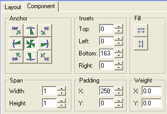
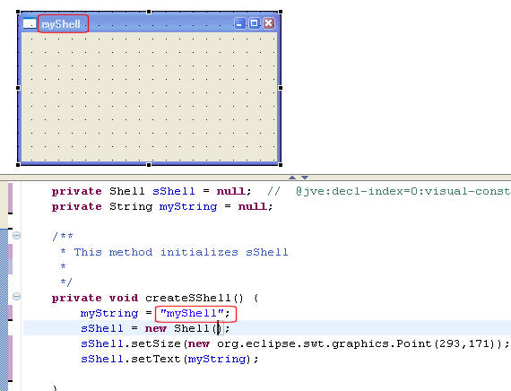
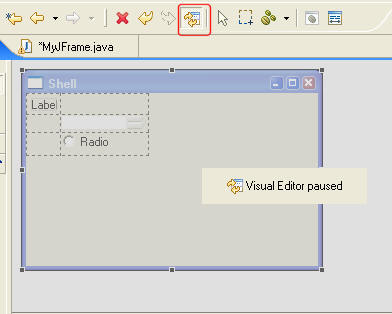

|
|
|
| VE 1.1 M1
New and Noteworthy |
Visual Editor 1.1 M1 introduced
many New
and Noteworthy features, namely
|
|
|
|
|
VE 1.1 M2 New and Noteworthy |
Visual Editor 1.1 M2 introduced many
New
and Noteworthy features, namely
|
|
|
|
| Improved
SWT Grid layout support |
Improve the visual assist for dropping,
and manipulating components on a Grid Layout. VE enables the user
to treat the Grid as a table that will automatically grow in both
directions, and insert/remove filler labels.
 |
|
|
|
| Improved Swing Gridbag layout support |
Beefed up the alignment dialog for
GridBagLayout to include paddings/weights, as well as improved GridBag's
visual feedbacks.  |
|
|
|
| Alpha blending feedback | VE will now use alpha blending if
advanced SWT graphics is available (requires the
Cairo
Vector engine on GTK and Motif, and
GDI+ on Windows). |
|
|
|
| Improved source parsing |
VE used to limit which object it modeled.
In 1.1, VE will try to model any object that is referenced by a visual:
e.g., the String myString object below 
|
|
|
|
| Improved pause reload feedback |
It is more obvious now when the Visual
synchronization is paused. In this state only updates in the
source code are allowed.  |